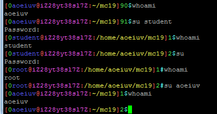
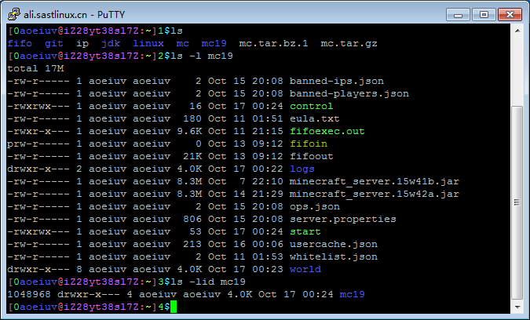
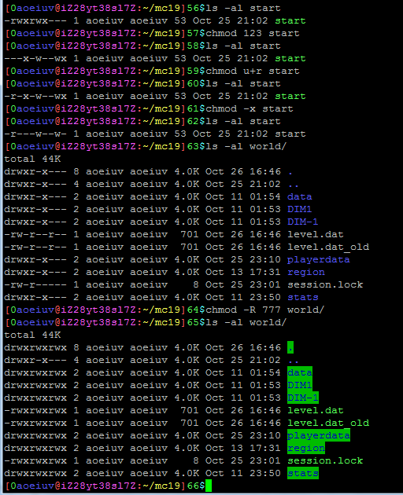
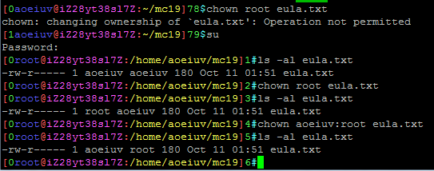
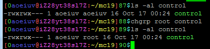
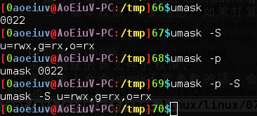
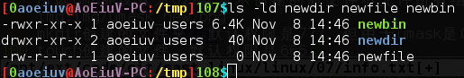
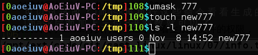

到这节课，我给大家都创了个账户了，以学号为用户名，属于一个名字和用户名一样的组，附属于student组。
先说一个命令，su，玩安卓应该经常见到这个，直接su命令就是切换到root权限，su后面加个用户名就是切换到指定的用户。

正常Linux的权限管理是和安卓不一样的，可以切换到任意用户包括root账户，但是要输入对方的密码，如果自己就是root最高权限，则可以用su随意切换身份而不用输入任何密码，试试用su切换用户到student和自己，熟悉一下su命令，su命令也会运行一个新的Shell，用exit退出就能回到原来的用户。

为什么上个ls的图呢，因为ls可以看到与这节课有关的信息，首先是前面的-rwxrwxrwx，8个字符，第一个是文件类型，和这节课无关，-是普通文件(regular file)，d是目录，后面是三个一组的9个字符，r是读权限，w是写权限，x是可执行权限，-就是没有这个位置代表的权限，前三个是文件所有者，中间三个是文件所有组，后三个是其他人，至于文件的所有者和所有组，分别是上图ls -l中的第三第四个字段，比如上图中的文件的所有者都是aoeiuv，所有组也都是aoeiuv，因为rwx三个一组，所以常用一个8进制数表示，之前有玩过安卓的话，可能在各种教程里看到过777,755,644,之类的数字，这就是用3个8进制数表示文件权限，比如8进制的755的二进制表示为，111 101 101，对应的权限就是，rwx r-x r-x，也就是所有者有读写执行权限，所有组和其他人都没有写权限，有的权限可能是4755之类的，4个8进制数，对应的rwsr-xr-x，多出来的一个8进制数对应三个高级权限，可能会出现s或者t，这三个比较高级的权限暂且不提，基本权限弄熟就好，关于所有组，Linux每个用户可以属于多个组，中间三位表示文件所有组的权限，就是对于所有在这个组的用户都有效的，比如多人开发一个项目，就让参与的人都加入一个组，把这个项目所有文件的所有组都设为那个组，就能给所有参与的人一样的权限，而不给别人权限，两个文件，/etc/passwd里面有所有用户的名字和id，/etc/group里面有所有组的名字的id，root用户是最特殊的，最高权限账户，只要有人有权限读写某个文件，root就能读写，然后大家随便进一些目录看看里面的文件的权限，要懂得把rwx之类的转成8进制数字，然后试试自己有没有权限修改删除。
chmod,chown,chgrp
首先是chmod(change mode)，改权限。

主要就是两种方式，chmod 755 file，用8进制数代表权限，chmod u+wx,g-w,o+r file，用字母(u是user所有者，g是group所有组，o是other其他人)和符号(+是加权限，-是减权限)，如果是小改的话可以用字母加符号表示，否则尽量用数字，还好看，改文件夹时加上参数-R大写的R，表示改包括目录下所有文件和子目录都改了，下面两个命令一样的-R一样的意思。
然后是chown(change owner)，改所有者。

如果不是root最高权限，是不能把文件所有者改成别人，也不能改别人的文件，也就是说就没用了，chown aoeiuv:student file，像这样可以同时改文件所有者和文件所有组。
最后是chgrp(change group)，改所有组。

文件所有者可以把自己的文件的所有组改成任意组，这些权限，所有者，所有组，是依赖文件系统的，Linux的ext文件系统支持，然而windows的fat和ntfs并支持这些，也就是说无法在改ntfs分区里的文件的权限，所有者，所有组这些，但是在挂载(mount)的时候，可以给整个分区设置一个统一的权限，所有者，所有组。文件和文件夹的权限，所有者，所有组，构成Linux强大的文件管理系统，试着改改自己家目录下的文件的这些权限，再去别人家目录看看有什么能读写的，比如可以试着吧所有组改成student看看，三个基本权限rwx要熟悉，如果打算深入，三个高级权限也要熟悉。
内部命令umask，决定创建的新文件的权限，每个进程都有自己独立的umask，可以继承给子进程，直接输入命令umask不带参数的话，会输出当前的umask的值。

输出0022，第一个0只是8进制数字的代表，没其他意义，不管，带参数-S的输出是用rwx表示的权限，-p是提示，输出的是设置umask的命令，可以看到，0022和rwxr-xr-x并不对应，实际上是刚好相反，这才是umask的作用，就是不允许新文件有哪些权限，比如022对应的是----w--w-，也就是所有组的写权限和其他人的写权限，所以umask设置为022就表示创建的新文件不允许所有组和其他人有写权限。

mkdir创建的文件夹，默认权限是777，但由于umask是022,所以实际上权限是755，touch创建的文件，默认权限是666，由于umask，变成644，gcc创建的可执行文件也是由777变成755，可以试试改了umask再执行这些命令看看生成的文件的权限，umask后面加上三位8进制数就可以了。
